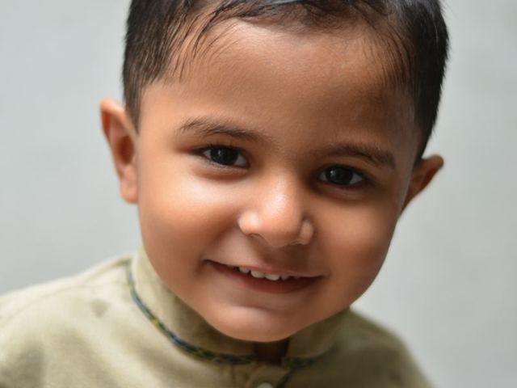
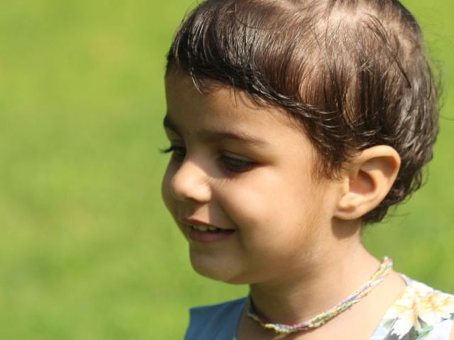
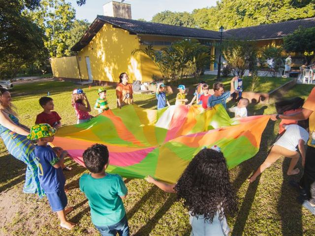

1babyn.
嬰兒
複數 babies
The baby is sleeping, so please be quiet.寶寶在睡覺，請安靜。

2boyn.
男孩
複數 boys
The boy in the blue cap is my brother.戴藍色帽子的男孩是我弟弟。
3childn.
兒童；小孩
複數 children（不規則）
Every child in the class has a new book.班上每個孩子都有一本新書。
4fooln.
傻瓜
April Fools' Day 愚人節
Don't be a fool. Think before you act.別當傻瓜，行動前先想一想。
5giantn. / adj.
巨人；巨大的
名詞、形容詞兩用
The giant in the story lived in a castle.故事裡的巨人住在一座城堡裡。

6girln.
女孩
複數 girls
The girl next to me is good at drawing.我旁邊的女孩很會畫畫。
7guyn.
傢伙；人（口語）
you guys 你們（口語）
Ken is a nice guy. Everyone likes him.Ken 是個好人，大家都喜歡他。

8kidn.
小孩（口語）
= child，比較口語
The kids are playing soccer in the park.孩子們在公園踢足球。
9kingn.
國王
↔ queen 女王
The king gave the brave boy a gold medal.國王頒給那個勇敢的男孩一面金牌。
10mann.
男人；成年男子
複數 men（不規則）
An old man is sitting on the bench.一位老先生坐在長椅上。
11neighborn.
鄰居
next-door neighbor 隔壁鄰居
Our neighbor often waters our plants for us.我們的鄰居常幫我們澆花。
12peoplen.
人們；民族
當「人們」是複數；當「民族」可數
Many people visit the night market on weekends.週末很多人去逛夜市。
13personn.
人（一個人）
複數通常用 people
She is the only person who knows the answer.她是唯一知道答案的人。
14queenn.
女王；王后
↔ king 國王
The queen wore a beautiful crown.女王戴著一頂漂亮的皇冠。
15strangern.
陌生人
strange 奇怪的 + -er
Don't open the door for a stranger.不要幫陌生人開門。
16teenagern.
青少年（13–19 歲）
teen = 十幾歲
Most teenagers like listening to music.大部分青少年都喜歡聽音樂。
17visitorn.
訪客；遊客
visit 拜訪 + -or
The museum has many visitors every day.這間博物館每天都有很多遊客。
18womann.
女人；成年女子
複數 women（不規則）
The woman with long hair is our new teacher.那位長頭髮的女士是我們的新老師。